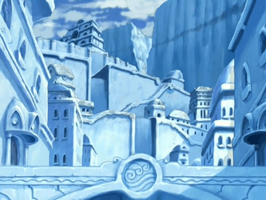
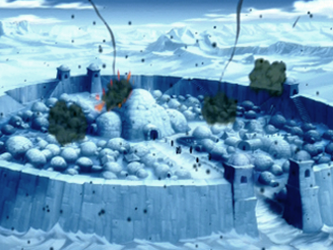
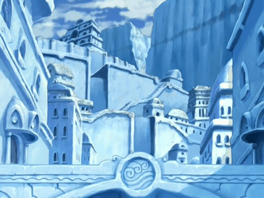
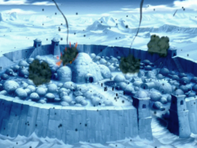

one of the four elemental bending arts, is the hydrokinetic ability to control water in all of its various forms. This type of bending is used by the people of the Water Tribe, who are divided into the Southern, Northern, and lesser known Foggy Swamp tribes, as well as those of the United Republic, each with their own unique bending style.
The Water Tribe is a collective term for the
nation of people who practice the art of
waterbending. It is one of the original four
nations and its citizens primarily inhabit the
northern and southernmost regions of the globe,
near both poles. Many people of Water Tribe
ethnicity also live in the United Republic and
there is a small community of waterbenders that
populate the Foggy Swamp in
 the Earth Kingdom, although they were isolated from
their sister tribes for generations and others were
largely unaware of their existence until they were
stumbled upon by Avatar Aang, Katara, and Sokka.
the Earth Kingdom, although they were isolated from
their sister tribes for generations and others were
largely unaware of their existence until they were
stumbled upon by Avatar Aang, Katara, and Sokka.
The people of the Water Tribe are generally peaceful, and strive to live in harmony with nature and the other nations of the world. There are two primary divisions of the Water Tribe, the Northern Tribe and the Southern Tribe.